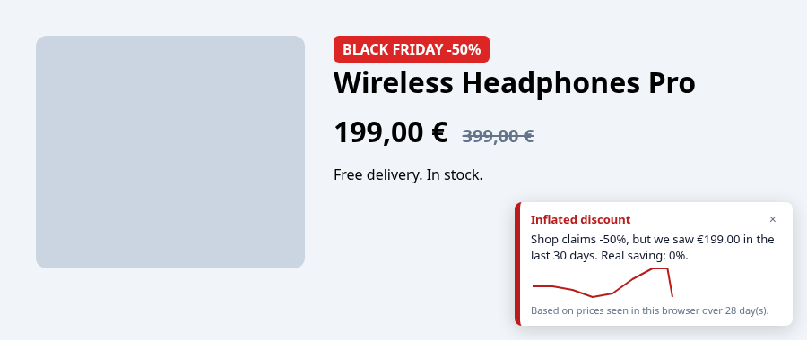

truediscount
Is that discount real? A fake discount checker for EU shops
Free browser extension that compares the crossed-out price with the lowest price of the last 30 days, the reference the EU Omnibus rule requires. Just in time for Black Friday.

Black Friday fake discounts in the EU
Every November, "-50%" appears on products that cost the same a few weeks earlier. Since 2022, EU law says the "old price" of a sale must be the lowest price of the previous 30 days (Directive 2019/2161, Article 6a of the Price Indication Directive). Consumer authorities still find shops that inflate the reference price. truediscount lets you check it yourself, right on the product page.
What it does

Supported shops
Amazon (DE, FR, IT, ES, NL, PL, SE, BE), Zalando, MediaMarkt, Saturn, Otto, eMAG, Allegro and bol.com out of the box. Any other web shop works after clicking Enable on this site in the popup. Interface in English and German.
Install
- Download the zip for your browser from the latest release.
- Chrome, Edge, Brave: unzip, open
chrome://extensions, enable Developer mode, click Load unpacked. - Firefox: open
about:debugging#/runtime/this-firefoxand choose Load Temporary Add-on.
Store listings are on the way.
FAQ
How do I know if a Black Friday discount is fake?
Compare the crossed-out price with the lowest price of the last 30 days. If the product was cheaper in that period, the discount is inflated. truediscount does this comparison automatically.
What is the EU Omnibus 30-day rule?
Directive (EU) 2019/2161 requires that any announced price reduction shows the prior price, defined as the lowest price the trader applied in at least the 30 days before the reduction.
Is the verdict legal advice?
No. It is information based on prices seen in your browser and on what the shop discloses. To report a shop, contact your national consumer authority.
Does truediscount collect my data?
No. See the privacy policy.
Is it free?
Yes, free and open source (MIT). You can support development through GitHub Sponsors.